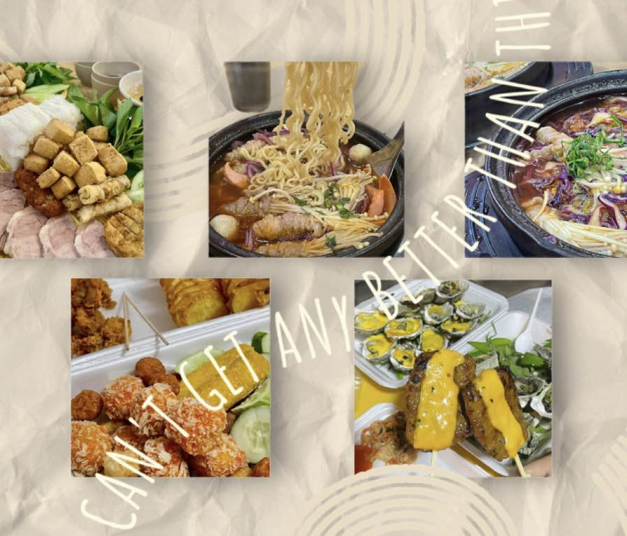
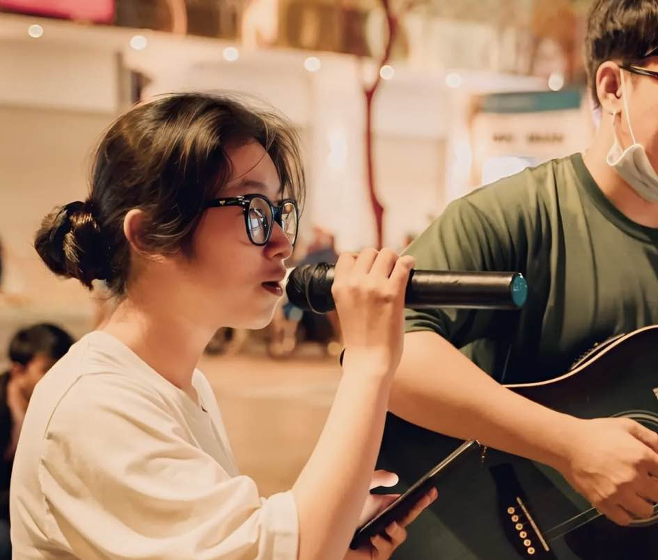

My Projects

AMATEUR PHOTOGRAPHER
One of the most cherished and artistic creations in my journey as an amateur photographer.

FOOD VLOGGER
Create influential social media channels to grow your career while enjoying the journey of becoming a passionate food vlogger.

STREET SINGER
Before, I was a street singer and performed at school events, acoustic music cafes and on walking streets.